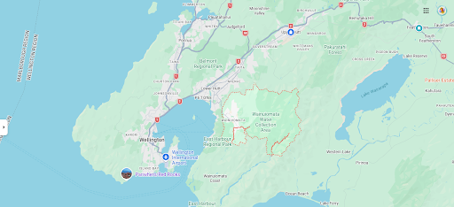

Wainuiomata


Baring Head Lighthouse Loop
6.8km
The Baring Head Lighthouse walk is a coastal loop track that climbs from the Wainuiomata river mouth up onto a small grassy plateau with sweeping ocean views back towards Wellington. The pathway then meanders down to the southern coast and then back along the river. The walk includes a lower section - which follows the river - then a higher ridge or plateau section - which has the ocean views back towards Wellington city. From this vantage point you can also see the South Island mountain Tapuae-o-Uenuku - which is part of the Kaikora mountain range.
At either end of this loop walk there is no avoiding a steep climb or descent - regardless of which direction you are going. But don’t worry, it’s relatively short and sharp.
Big Bend Track
3.1km
The Big Bend Track is located in Remutaka Forest Park in the Wellington region. This track starts at Turere Bridge and takes you alongside the Ōrongorongo River to Whakanui Creek. Return via the same track or continue with the Whakanui Track and Mount McKerrow Track to make this track a loop walk.
It features charming views of the river and native bush.


Five Mile Loop Track
3.8km
This easy track passes through superb groves of mature hard beech in the lower reaches of Graces Stream.
The track climbs through an old burn, now covered in second growth forest with profuse rimu regeneration, to Clay Forks at the junction with Clay Ridge Track and Middle Ridge Track.
As the track descends into the Catchpool Valley there are excellent views of the distant Remutaka Range and the forest canopy of the valley.
Orongorongo Track
4.3km
Located in the Catchpool and Ōrongorongo Valleys, the Ōrongorongo Track provides a popular area for camping, hiking, and walking. At 10km, the moderately challenging route takes an average of 2 hours and 45 minutes to complete. Accessed south of Wainuiomata, the track is about 45 minutes from Wellington.
The trail climbs gently through mixed podocarp and broadleaf forest surrounding the Ōrongorongo River. And at the end of the walk, there are swimming holes at Tūrere Stream to cool off. This is a very popular walk, so you’ll likely encounter other people while exploring. Dogs are welcome but must be on a leash.


Whakanui Track
9.6km
The Whakanui Track takes you from Wainuiomata through to the Orongorongo River in the Remutaka Forest Park. It can be walked as a return trip, or connected with the Big Bend Track or Mt McKerrow Track finishing at Catchpool carpark, or with Papatahi Crossing to finish in the Wairarapa.
The track begins from Wainuiomata. It then ascends up to a long flat ridge separating Whakanui Creek from Turere Stream. From there it continues on the true right side of Whakanui Creek to the end of the track.The track passes through lush forest for most of its length. There are beautiful views of the Remutaka Range from the highest parts of the track.